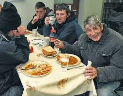

Dear Friends of the Capuchin Day Centre,
On behalf of the Capuchin Franciscan Order, I wish to express our deepest gratitude for your kindness during the year. Despite the increased number of people needing our help, we did not have to cut services and no one went away from the Centre without food aid. The sheer goodness of people is evidenced every day here in Bow Street by the efforts and support of people from all walks of life, young and old, who have one thing in common, a wish to help our less fortunate brothers and sisters.
I would like to offer sincere thanks to all who undertook fundraising events on our behalf and raised much needed funds to offset our extra costs. We particularly thank those who over the years have faithfully continued to send in donations (often anonymously). Many people have been helping us since the Centre started over 40 years ago. May God and St. Francis reward you for your goodness.
While the future looks very bleak for the more vulnerable members of our society and everyone is reeling from the harshness of the economic situation, we Capuchins feel confident that with the help of God working through so many good people, we can not only survive the recession but meet the challenge of helping the increasing number of people who come to our door. Every day I thank God for the people who support us.
It fills my heart with hope for the future of our country and encourages me in my own Christian commitment to this work. With every good wish and our prayers for God’s blessings on you and all you hold dear.
